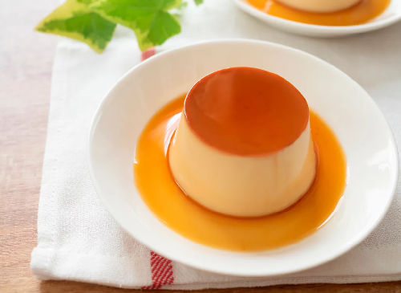

Flan Casero de Vainilla
Postre aterciopelado, ligero y rápido de preparar. Ideal para terminar una cena con un toque elegante.
Ingredientes
- 4 huevos
- 1 lata de leche condensada (395 g)
- 1 lata de crema de leche (360 ml)
- 1 cucharadita de esencia de vainilla
- 1 taza de azúcar
Preparación
- Preparar el caramelo
- Coloca el azúcar en una sartén a fuego medio.
- Deja que tome color dorado (sin quemar) y vierte en el molde.
- Mezclar ingredientes
- Licúa huevos, leche condensada, crema de leche y vainilla.
- Procesa hasta obtener una mezcla homogénea.
- Hornear a baño María
- Vierte la mezcla en el molde con caramelo.
- Coloca el molde dentro de una bandeja con agua caliente.
- Hornea a 180 °C durante 45 min o hasta palillo seco.
- Enfriar y desmoldar
- Deja enfriar y refrigera 2 h.
- Pasa un cuchillo por los bordes y desmolda.
- Servir
- Decora con caramelo líquido o frutas frescas.